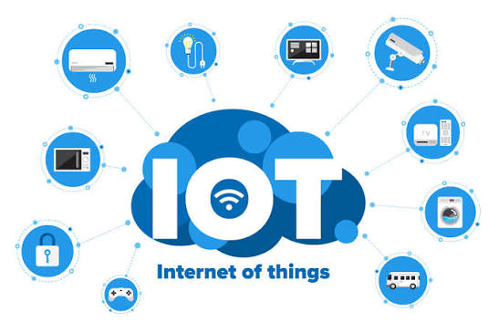

Programación para IoT (Internet de las Cosas)
Introduccion y conceptos

El Internet de las Cosas (IoT), por sus siglas en inglés (Internet of Things), hace referencia a una red de objetos físicos e interconectados ("cosas") que están dotados de sensores, software, capacidad de cómputo y tecnologías de red. Su propósito fundamental es recopilar, intercambiar y procesar datos del entorno físico sin requerir una intervención humana constante, transformando objetos cotidianos o industriales en nodos inteligentes.
Relevancia actual: Hoy en día, el IoT conecta miles de millones de dispositivos en todo el mundo. Su programación exige un alto nivel de optimización debido a las limitaciones físicas de los microcontroladores (escasez de memoria RAM, almacenamiento reducido y la necesidad imperativa de operar con un consumo energético mínimo).